Recommended: run this notebook in Google Colab, nothing to install.
Just click on the “Open in Colab” button and follow along. Click the ▶ button on each cell (or press Shift+Enter) to see the results and move on to the next one.
The documentation website shows pre-run results you can check if you don’t want to or can’t use Colab.
Session 2: Understand the Navigate logic#
The aim of this section is to cover the basics of Navigate’s logic using a simple, though useful, case as an illustration.
Keep in mind that some of the data have been completely invented for the purpose of this exercise (so please do not create your own trade route based on this example).
We look at how Navigate would model the decision process of a ship operator running a line between San Antonio and Rotterdam, in a world getting towards decarbonisation: green fuels are starting to be produced at scale, technology options for engines and retrofits are available, and regulations incentivizing the use of green fuels are in place.
The case#
![Map of the Chile to Rotterdam copper trade: the two bunker ports, a fleet of ships on the voyage via the Panama Canal, and the fuel production sites in Patagonia and southern Sweden, both of which make e-methanol and e-ammonia, with bio-methanol in Sweden as well]()
San Antonio to Rotterdam via the Panama Canal: the two bunker ports, the voyage, and the possible fuel plants.
A ship operator runs a fleet of 300 Panamax bulk carriers (~80,000 DWT) carrying copper concentrate from San Antonio, Chile to Rotterdam, roughly 7,600 nautical miles each way via the Panama Canal, and returning in ballast (empty).
It is 2026 and every ship in the fleet burns fuel oil. The fleet is ageing and most of the fleet has to be renewed before 2050, the horizon of the simulation.
The ships are also exposed to two regulations: FuelEU Maritime and the EU ETS, both of which cover half of the voyage.
The ship operator has to decide which fuel to bunker and where, and can choose to retrofit ships or buy new ones at any time. The operator can also take operational measures such as reducing speed, and can fit efficiency measures.
Four ship designs are available on the market:
Configuration |
Burns |
|---|---|
|
conventional fuel oil |
|
dual-fuel LNG |
|
dual-fuel methanol |
|
dual-fuel ammonia |
On the other side, we follow the behavior of two fuel producers: one that can produce e-fuels (e-ammonia or e-methanol) and one that can produce biofuel (bio-methanol). The e-fuel plants can be installed in Chile or in Europe. The biofuel plant only in Europe (to simplify the case).
What you’ll do#
Part 1: Build the deck. See how a case like this is expressed using Navigate’s components library.
Part 2: Explore the input data. Look at the numerical assumptions that will drive the answer.
Part 3: Understand the logic behind the model. Understand how Navigate decides, for the fleet operator and for the fuel producer, and read the results it produces.
Part 4: Sensitivity analysis. Change the inputs one at a time (prices, regulation, fuel supply, the operator’s temperament) and see what moves the answer.
Setup#
Run the cell below on Colab or locally to set up the Navigate model. It also loads the pre-made example that will be used to illustrate this part of the workshop.
Moved up to the repository root.
Navigate 1.0.0 is already installed.
Part 1: Build the deck#
Navigate is a bit like a “drag and drop” model: you pick some components (nodes) from the ones available and add them to your simulation (deck).
A deck is the input to a Navigate run: one .nav file plus the .inc files it includes.
The .nav file is just a table of contents with two sections —
DEFINE for the nodes the simulation is made of, and EVENTS for the timeline
it steps through.
Include adds one of the deck’s own files, by its path. Load adds a ready-made module from the Center’s assumptions library, by its name.
Check the Reference Manual and Tutorials if you want more details on this.
Read the .nav file first, to see how the deck is built for the current case.
show(EXAMPLE / "example_4.nav")
# SPDX-FileCopyrightText: 2026 Fonden Mærsk Mc-Kinney Møller Center for Zero Carbon Shipping
# SPDX-License-Identifier: CC-BY-4.0
# EXAMPLE 4 - Panamax fleet, Chile to Rotterdam.
DEFINE {
Load DefaultModelDefinition
# ---- fleet ----
Include "includes/fleet.inc"
Include "includes/energy_efficiencies.inc"
# ---- route ----
Include "includes/route.inc"
Include "includes/ports.inc"
Include "includes/bunker_logistics.inc"
# ---- fuel ----
Include "includes/fuel_production.inc"
Include "includes/regions.inc"
Include "includes/producer.inc"
Load DefaultEmission
# ---- regulation ----
Include "includes/eu_ets.inc"
Include "includes/fuel_eu.inc"
# ---- decision processes ----
Load DefaultCalibration
# ---- export ----
Include "includes/report.inc"
Load DefaultPlot
}
EVENTS {
Load DefaultTimeStepYearly
}
Fleet definition#
In our case, the fleet starts as 300 fuel-oil vessels set with InitialVessels and InitialSplit.
InitialAgeDistribution is the age spread of the world’s 80k DWT bulk carriers, taken from the library as Curve("age_dist_bulk_carrier_80k_dwt_oil"). Navigate splits the fleet into one cohort per year of age, and the retrofit decision will be taken per cohort.
Two mechanisms will compete over the next 25 years:
Retrofit — convert an existing oil ship to methanol or ammonia. An LNG ship can only be bought new, and can itself be retrofitted to ammonia. The
set_fuel_conversion_costlines put a price on retrofitting an existing oil ship to another configuration.Replace — do nothing until a cohort retires, then let all four configurations compete as newbuilds.
Run next cell to look in more details, how the “fleet” is implemented in Navigate.
show(EXAMPLE / "includes/fleet.inc")
# SPDX-FileCopyrightText: 2026 Fonden Mærsk Mc-Kinney Møller Center for Zero Carbon Shipping
# SPDX-License-Identifier: CC-BY-4.0
# FLEET - Panamax bulk carriers (~80,000 DWT), four configurations of one hull.
# All four share hull, propulsion curve, cargo capacity and OPEX.
Copy Vessel "bulk_carrier_80k_dwt_ice_oil" "ship_oil"
Copy Vessel "bulk_carrier_80k_dwt_ice_methane" "ship_lng"
Copy Vessel "bulk_carrier_80k_dwt_ice_methanol" "ship_methanol"
Copy Vessel "bulk_carrier_80k_dwt_ice_ammonia" "ship_ammonia"
Fleet "copper_trade" {
Vessels = [Vessel("ship_oil"),
Vessel("ship_lng"),
Vessel("ship_methanol"),
Vessel("ship_ammonia")]
InitialVessels = 300 # Arbitrary number (represents 8% of the world Panamax fleet)
InitialSplit = [1.0, 0.0, 0.0, 0.0] # Only ship oil vessels
InitialAgeDistribution = [
Curve("age_dist_bulk_carrier_80k_dwt_oil"),
0,
0,
0
]
# Note: Orderbooks omitted for this example since the library's are sized for
# the whole world
# Library trade growth for this class: ~2.2%/yr stepping down to ~1.4%.
# Newbuilds are therefore a mix of replacement and expansion.
TradeGrowth = Forecast("trade_growth_bulk_carrier")
# Retrofit costs, figures for this class (Fleet/bulk_carrier_80k_dwt.inc).
set_fuel_conversion_cost("ship_oil", "ship_methanol", 17.5e6)
set_fuel_conversion_cost("ship_oil", "ship_ammonia", 24.1e6)
set_fuel_conversion_cost("ship_lng", "ship_ammonia", 14.2e6)
AllowSpeedManagement = TRUE
MaximumSpeedChange = 0.7
}
What a Vessel node looks like#
fleet.inc never describes the ships themselves. It reaches for them with
Copy Vessel, which takes a vessel out of our assumptions library and gives
the copy a local name — so ship_oil is a copy of
bulk_carrier_80k_dwt_ice_oil.
Run the next cell to check what goes into a vessel node.
# fleet.inc reaches these four with `Copy Vessel`. Here is one of them.
VESSEL_DIR = Path("assumptions/defaults/installation/Vessel")
show(VESSEL_DIR / "bulk_carrier_80k_dwt_ice_oil.inc")
# SPDX-FileCopyrightText: 2026 Fonden Mærsk Mc-Kinney Møller Center for Zero Carbon Shipping
# SPDX-License-Identifier: CC-BY-4.0
Vessel "bulk_carrier_80k_dwt_ice_oil" {
PropulsionLoad = Surface("bulk_carrier_80k_dwt_propulsion_load")
ElectricalLoadAtSea = Variable("bulk_carrier_80k_dwt_electrical_load_sea")
ElectricalLoadInPort = Variable("bulk_carrier_80k_dwt_electrical_load_port")
HeatLoadAtSea = Variable("bulk_carrier_80k_dwt_heat_load_sea")
HeatLoadInPort = Variable("bulk_carrier_80k_dwt_heat_load_port")
PowerSystem = PowerSystem("ice_oil_bulk_carrier_80k_dwt")
Tanks = [Tank("main_oil_bulk_carrier_80k_dwt")]
Route = Route("operational_profile_bulk_carrier_80k_dwt")
NominalCapacity = Variable("bulk_carrier_80k_dwt_nominal_capacity")
Lifetime = Variable("bulk_carrier_80k_dwt_lifetime")
CAPEX = Forecast("bulk_carrier_80k_dwt_capex")
OPEX = Forecast("bulk_carrier_80k_dwt_opex")
CostOfCapital = Variable("cost_of_capital_vessel")
}
Route definition#
In this example, the ships sail between the ports of San Antonio and Rotterdam, 7,600 nm apart via the Panama Canal, at a service speed of 11.5 kn and 6.8 days alongside per call.
The two legs (one leg is a one way ship travel) are asymmetric in this example. Outbound the ship is full of copper concentrate; homebound it sails in ballast (empty). In the model, this can be set as CapacityUtilizations = [1.0, 0.0].
show(EXAMPLE / "includes/route.inc")
# SPDX-FileCopyrightText: 2026 Fonden Mærsk Mc-Kinney Møller Center for Zero Carbon Shipping
# SPDX-License-Identifier: CC-BY-4.0
# ROUTE - San Antonio to Rotterdam and back via the Panama Canal.
# ROUND_TRIP visits the ports in the order listed; each entry in
# Distances/Speeds/CapacityUtilizations is the leg leaving the port at that index.
Vessel "ship_*" {
Route = Route("copper_route")
}
Route "copper_route" {
RouteType = ROUND_TRIP
Ports = [Port("san_antonio"), Port("rotterdam")]
# Days alongside per call, from the library's operational profile for this
# class: TimeAtSea 0.55 over 24 calls/year = 0.45 x 365 / 24.
PortDurations = [6.8, 6.8]
# The distances for this example are invented since this route geography
# is not included in the Navigate Assumption.
Distances = [7600, 7600]
# Modal service speed from the library's operational profile for this ship class.
Speeds = [11.5, 11.5]
# Laden out, ballast home.
CapacityUtilizations = [1.0, 0.0]
}
Ports definition#
In this example, we assume that both ports sell the same five fuels: fuel oil, LNG, e-ammonia, e-methanol and bio-methanol. Fuel is shipped from the region that made it to the port that needs it, at a given transport cost, function of the distance it travelled.
show(EXAMPLE / "includes/ports.inc")
# SPDX-FileCopyrightText: 2026 Fonden Mærsk Mc-Kinney Møller Center for Zero Carbon Shipping
# SPDX-License-Identifier: CC-BY-4.0
# PORTS - what can be bunkered where. All three alternative fuels are bunkerable at
# both ports; a fuel is shipped to the port that did not produce it, the same way
# Chilean e-ammonia reaches Rotterdam.
# Delivered price is production cost plus transport, set in bunker_logistics.inc.
Port "san_antonio" {
set_bunkering_allowed("methanol_electro", TRUE)
set_bunkering_allowed("ammonia_electro", TRUE)
set_bunkering_allowed("methanol_bio", TRUE)
}
Port "rotterdam" {
set_bunkering_allowed("methanol_electro", TRUE)
set_bunkering_allowed("ammonia_electro", TRUE)
set_bunkering_allowed("methanol_bio", TRUE)
}
Port "*" {
# the two fossil fuels are treated as globally traded and available anywhere
set_bunkering_allowed("fossil_fuel_oil", TRUE)
set_bunkering_allowed("liquefied_natural_gas", TRUE)
# Fossil prices and upstream emissions are taken as given rather than built
# bottom-up from a production pathway.
set_bunker_price_overwrite("fossil_fuel_oil", Forecast("fossil_fuel_oil_price_global"))
set_bunker_wtt_overwrite("fossil_fuel_oil", "carbon_dioxide", Forecast("fossil_fuel_oil_wtt_carbon_dioxide"))
set_bunker_price_overwrite("liquefied_natural_gas", Forecast("liquefied_natural_gas_price_global"))
set_bunker_wtt_overwrite("liquefied_natural_gas", "carbon_dioxide", Forecast("liquefied_natural_gas_wtt_carbon_dioxide"))
set_bunker_wtt_overwrite("liquefied_natural_gas", "methane", Forecast("liquefied_natural_gas_wtt_methane"))
# cost of physically getting the fuel aboard, USD/ton
set_handling_cost("fossil_fuel_oil", Variable("handling_cost_oil"))
set_handling_cost("liquefied_natural_gas", Variable("handling_cost_lng"))
set_handling_cost("methanol_electro", Variable("handling_cost_methanol"))
set_handling_cost("methanol_bio", Variable("handling_cost_methanol"))
set_handling_cost("ammonia_electro", Variable("handling_cost_ammonia"))
}
# Values are invented for this example.
Variable "handling_cost_oil" {
Value = 8
}
Variable "handling_cost_lng" {
Value = 15
}
Variable "handling_cost_methanol" {
Value = 18
}
Variable "handling_cost_ammonia" {
Value = 25
}
Fuel production#
Five fuels are considered in this model: oil, LNG, e-ammonia, e-methanol and bio-methanol. A vessel is defined by the fuel type its engine and tanks accept, and several fuels can satisfy one type. For example, the same methanol ship can accept bio-methanol, e-methanol or oil (dual-fuel engine).
E-ammonia, e-methanol and bio-methanol need to be produced by a fuel plant.
show(EXAMPLE / "includes/fuel_production.inc")
# SPDX-FileCopyrightText: 2026 Fonden Mærsk Mc-Kinney Møller Center for Zero Carbon Shipping
# SPDX-License-Identifier: CC-BY-4.0
# FUEL PRODUCTION - five fuels for four ships; both methanols feed one ship.
#
# Only the siting is set here (region and electricity source). Lead times,
# lifetimes, capacities and process economics come from the library.
# Feedstock ceilings for the two methanols are set in producer.inc.
# ---- fossil (global commodities, no production chain modelled) --------------
Import Fuel "fossil_fuel_oil"
Import Fuel "liquefied_natural_gas"
# ---- Chilean e-methanol -----------------------------------------------------
Import Fuel "methanol_electro"
Import Plant "plant_methanol_electro_alkaline"
Plant "plant_methanol_electro_alkaline" {
Region = Region("americas")
Source = Source("renewable") # dedicated wind, not the Chilean grid
}
Import Process "methanol_synthesis_electro_alkaline"
Import Process "hydrogen_electro_alkaline"
Import Process "electrolysis_stack_alkaline"
Import Feedstock "carbon_dioxide_biogenic"
# ---- Chilean e-ammonia ------------------------------------------------------
Import Fuel "ammonia_electro"
Import Plant "plant_ammonia_electro_alkaline"
Plant "plant_ammonia_electro_alkaline" {
Region = Region("americas")
Source = Source("renewable")
}
Import Process "ammonia_synthesis_electro_alkaline"
Import Process "nitrogen_air_separation"
# ---- European bio-methanol --------------------------------------------------
Import Fuel "methanol_bio"
Import Plant "plant_methanol_bio_gasification"
Plant "plant_methanol_bio_gasification" {
Region = Region("europe")
Source = Source("grid") # a biomass plant draws from the grid
}
Import Process "methanol_synthesis_bio_gasification"
Import Feedstock "feedstock_biomethanol_gasification"
# ---- European e-fuels -------------------------------------------------------
# The same library pathways as Chile, sited in Europe. Copy, not Import: the
# Chilean nodes already carry these library names and are sited in americas.
# A second electrolyser route for e-ammonia was tried here, to give one fuel two
# competing plants under one producer. It stalls the 2038 solve, so it is left out.
Copy Plant "plant_methanol_electro_alkaline" "plant_methanol_electro_alkaline_europe"
Plant "plant_methanol_electro_alkaline_europe" {
Region = Region("europe")
Source = Source("renewable")
}
Copy Plant "plant_ammonia_electro_alkaline" "plant_ammonia_electro_alkaline_europe"
Plant "plant_ammonia_electro_alkaline_europe" {
Region = Region("europe")
Source = Source("renewable")
}
# ---- shared inputs ----------------------------------------------------------
Import Feedstock "demineralized_water"
Import Source "renewable"
Import Source "grid"
A producer is the agent that decides whether to build fuel plants or not and which ones.
We have two producers in this model: an e-fuel producer that can build e-ammonia and e-methanol in either Patagonia or Europe, and a biofuel producer that builds bio-methanol (only in Europe).
The feedstocks for bio-methanol (biomass) and e-methanol (biogenic CO2) are constrained (using an arbitrary number in this simulation) meaning that plant build is limited for these two fuels.
In the model it is also possible to constraint the number of fuel plants that can be build in a year (but it will not be binding for our example).
show(EXAMPLE / "includes/producer.inc")
# SPDX-FileCopyrightText: 2026 Fonden Mærsk Mc-Kinney Møller Center for Zero Carbon Shipping
# SPDX-License-Identifier: CC-BY-4.0
# PRODUCERS - the agents that decide whether to build another plant.
#
# Ownership is by FUEL FAMILY, not by geography. A Producer in Navigate is an EPC
# market rather than a place, so the e-fuel producer builds wherever a site is
# cheapest delivered - and because it owns two plants making the same fuel, it
# has a choice to make between them on delivered cost.
Producer "producer_efuel" {
Plants = [Plant("plant_methanol_electro_alkaline"),
Plant("plant_ammonia_electro_alkaline"),
Plant("plant_methanol_electro_alkaline_europe"),
Plant("plant_ammonia_electro_alkaline_europe")]
MaximumDevelopment = <Forecast("epc_global_capacity_mid") * Forecast("epc_global_share_shipping")>
# Ceiling on biogenic CO2, the feedstock both its e-methanol plants draw on.
# This one only bites at the end: no e-methanol is built before 2040, and the
# draw then tracks the ceiling through the 2040s before reaching it in 2049.
set_feed_constraint("carbon_dioxide_biogenic", <Forecast("carbon_dioxide_biogenic_availability") * Forecast("carbon_dioxide_biogenic_share_shipping") * Variable("trade_share_biogenic_carbon_dioxide")>)
}
Producer "producer_biofuel" {
Plants = [Plant("plant_methanol_bio_gasification")]
MaximumDevelopment = <Forecast("epc_global_capacity_mid") * Forecast("epc_global_share_shipping")>
# Ceiling on gasifiable biomass. This one BINDS: it roughly halves the
# bio-methanol this trade can source, so the fuel is limited by what can be
# grown rather than by what the ships would buy.
set_feed_constraint("feedstock_biomethanol_gasification", <Forecast("feedstock_biomethanol_gasification_availability") * Forecast("feedstock_biomethanol_gasification_share_shipping") * Variable("trade_share_gasifiable_biomass")>)
}
# The library's feedstock forecasts are global and its *_share_shipping factors
# are the whole sector's slice. This deck is 300 ships on one trade, not the
# world fleet, so each producer gets a slice of that in turn. Both shares are
# invented for this example, and both are set where they start to bite: biomass
# from 2038, biogenic CO2 only in the last years.
Variable "trade_share_gasifiable_biomass" {
Value = 0.01
}
Variable "trade_share_biogenic_carbon_dioxide" {
Value = 0.003
}
Implement bunker logistics#
LiquidMarketFuels such as fuel oil and LNG are treated as global commodities:
available anywhere at a quoted price, with no plant, producer or logistics chain
modelled.
Everything else has to be physically moved from the plant to the bunker port,
priced at distance × rate. set_distance gives the sea distance from a
production region to a port, and set_transport_cost the rate per ton per
nautical mile.
show(EXAMPLE / "includes/bunker_logistics.inc")
# SPDX-FileCopyrightText: 2026 Fonden Mærsk Mc-Kinney Møller Center for Zero Carbon Shipping
# SPDX-License-Identifier: CC-BY-4.0
# BUNKER LOGISTICS - production site to bunker port.
# LiquidMarketFuels are treated as global commodities: quoted price, no plant,
# no producer, no logistics chain. Everything else picks up distance x rate.
BunkerLogistics {
LiquidMarketFuels = [Fuel("fossil_fuel_oil"), Fuel("liquefied_natural_gas")]
# The values have been invented for this example:
# nautical miles from the production region to each port
set_distance("americas", "san_antonio", 1250)
set_distance("americas", "rotterdam", 7600)
set_distance("europe", "rotterdam", 540)
set_distance("europe", "san_antonio", 7600)
# USD per ton per nautical mile
set_transport_cost("*", 0.02)
}
Implement regulations (FuelEU and EU ETS)#
![The EU regulatory package: the Renewable Energy Directive sets emissions values, sustainability criteria, GHG emission savings and certification; FuelEU Maritime limits the GHG intensity of fuel on a declining staircase to 2050, with penalties paid for emissions above the annual target and pooling rewarding vessels below it; and the EU Emissions Trading System puts a price on every tonne of GHGs, with ships buying EU Allowances]()
FuelEU Maritime caps the GHG intensity of the fuel and so drives fuel switching; the EU ETS prices every tonne emitted and so drives efficiency. The Renewable Energy Directive supplies the definitions and certification both rely on.
In Navigate a regulation is applied to a specific geography. Jurisdiction lists the
ports that sit inside the regulatory scheme. In this example, FuelEU and EU ETS cover the port of Rotterdam, but not San Antonio. Three fractions decide how much of the fuel burned on a voyage is counted.
The fractions are applied leg by leg. In Navigate, a leg is one port-to-port sailing between two consecutive ports on the route. This round trip has two, out and back. Navigate reserves the word for the ship’s own route segments, so a fuel’s journey from plant to bunker port is a trip, not a leg. Navigate classifies each leg by its two end ports, and the port stay. On this round trip that gives:
Leg or port stay |
Classification |
Counted for regulation |
|---|---|---|
San Antonio → Rotterdam, 7,600 nm ≈ 27.5 days |
one end inside → |
50 % |
Rotterdam → San Antonio, 7,600 nm ≈ 27.5 days |
one end inside → |
50 % |
alongside in Rotterdam, 6.8 days per call |
inside → |
100 % |
alongside in San Antonio, 6.8 days per call |
outside → |
0 % |
The two instruments apply to different emission scopes:
EU ETS on TTW — tank to wake. Emissions that come out of the ship engine.
FuelEU on WTW — well to wake. TTW, plus emissions to make and deliver the fuel.
Each instrument is one Regulation node, and the .nav includes one file per
instrument — includes/eu_ets.inc and includes/fuel_eu.inc.
Beyond the geography, most of the content is emission factors: a
set_fuel_ttw line per fuel per gas, saying what a ton of that fuel emits once
burned. FuelEU adds set_fuel_wtt lines for the fuels whose upstream value the
regulation fixes by default.
E-fuels are omitted since there are no default factors. Upstream intensity is then calculated by Navigate from the production chain in regions.inc.
show(EXAMPLE / "includes/eu_ets.inc")
# SPDX-FileCopyrightText: 2026 Fonden Mærsk Mc-Kinney Møller Center for Zero Carbon Shipping
# SPDX-License-Identifier: CC-BY-4.0
# EU ETS - absolute price on CO2-equivalent burned on board, no free allowance.
#
# The coverage fractions are applied PER LEG, not to the round trip. Both legs
# here are inter-jurisdiction, so both count at 50%. Port stays are classified
# by their own port, so Rotterdam counts in full and San Antonio not at all.
Regulation "eu_ets" {
Measure = ABSOLUTE
Scheme = INDIVIDUAL
Scope = TTW
IncludeSlip = FALSE # methane slip is carried in the TTW methane factors
Emissions = [Emission("carbon_dioxide"), Emission("methane"), Emission("nitrous_oxide")]
Fuels = Fuel("*")
# Rotterdam is the only EU port on this route
Jurisdiction = [Port("rotterdam")]
IntraFraction = 1 # both ends in the EU
InterFraction = 0.5 # one end in the EU
ExtraFraction = 0 # neither end in the EU
RemedialCost = <Forecast("eu_ets_carbon_credit_price") * Forecast("eu_ets_maritime_phase_in")>
# no free allocation: every covered ton is paid for
set_vessel_threshold("*", 0.)
set_include_vessel("*", TRUE)
set_global_warming_potential("carbon_dioxide", 1)
set_global_warming_potential("methane", 28)
set_global_warming_potential("nitrous_oxide", 265)
# Emission factors follow MRV Maritime Regulation Annex I. Bio and electro
# fuels are assumed to meet the >65% criterion, so are zero-rated for CO2 but
# still take "highest in class" methane and nitrous oxide.
set_fuel_ttw("fossil_fuel_oil", "carbon_dioxide", Variable("eu_default_diesel_carbon_dioxide"))
set_fuel_ttw("fossil_fuel_oil", "methane", <Variable("eu_default_diesel_ice_methane") * Forecast("eu_ets_ghg_phase_in")>)
set_fuel_ttw("fossil_fuel_oil", "nitrous_oxide", <Variable("eu_default_diesel_ice_nitrous_oxide") * Forecast("eu_ets_ghg_phase_in")>)
set_fuel_ttw("liquefied_natural_gas", "carbon_dioxide", Variable("eu_default_methane_carbon_dioxide"))
set_fuel_ttw("liquefied_natural_gas", "methane", <Forecast("eu_default_methane_slip") * Forecast("eu_ets_ghg_phase_in")>)
set_fuel_ttw("liquefied_natural_gas", "nitrous_oxide", <Variable("eu_default_methane_ice_nitrous_oxide") * Forecast("eu_ets_ghg_phase_in")>)
set_fuel_ttw("methanol_electro", "carbon_dioxide", 0)
set_fuel_ttw("methanol_electro", "methane", <Variable("eu_default_diesel_ice_methane") * Forecast("eu_ets_ghg_phase_in")>)
set_fuel_ttw("methanol_electro", "nitrous_oxide", <Variable("eu_default_diesel_ice_nitrous_oxide") * Forecast("eu_ets_ghg_phase_in")>)
set_fuel_ttw("methanol_bio", "carbon_dioxide", 0)
set_fuel_ttw("methanol_bio", "methane", <Variable("eu_default_diesel_ice_methane") * Forecast("eu_ets_ghg_phase_in")>)
set_fuel_ttw("methanol_bio", "nitrous_oxide", <Variable("eu_default_diesel_ice_nitrous_oxide") * Forecast("eu_ets_ghg_phase_in")>)
set_fuel_ttw("ammonia_electro", "carbon_dioxide", 0)
set_fuel_ttw("ammonia_electro", "methane", <Variable("eu_default_diesel_ice_methane") * Forecast("eu_ets_ghg_phase_in")>)
set_fuel_ttw("ammonia_electro", "nitrous_oxide", <Variable("eu_default_diesel_ice_nitrous_oxide") * Forecast("eu_ets_ghg_phase_in")>)
}
FuelEU is the same shape, with two differences to look for: Scheme = FLEXIBLE (applies for the fleet) instead of INDIVIDUAL (applies per vessel), and the set_fuel_wtt lines that fix upstream intensity for the fossil fuels and bio-methanol — but not for the two e-fuels.
show(EXAMPLE / "includes/fuel_eu.inc")
# SPDX-FileCopyrightText: 2026 Fonden Mærsk Mc-Kinney Møller Center for Zero Carbon Shipping
# SPDX-License-Identifier: CC-BY-4.0
# FUELEU MARITIME - caps WTW greenhouse gas intensity, tightening over time.
#
# The e-fuels get no set_fuel_wtt line below on purpose: Navigate calculates
# their upstream intensity from the production chain in regions.inc, so the
# power price at each site feeds their FuelEU score. The fossil fuels and
# bio-methanol instead use the regulation's own defaults.
#
# Same coverage geography as eu_ets.inc.
Regulation "fuel_eu" {
Measure = INTENSITY
Scheme = FLEXIBLE # pooled and banked across years, unlike the ETS
Scope = WTW
IncludeSlip = FALSE # methane slip is carried in the TTW methane factors
Emissions = [Emission("carbon_dioxide"), Emission("methane"), Emission("nitrous_oxide")]
Fuels = Fuel("*")
Jurisdiction = [Port("rotterdam")]
IntraFraction = 1
InterFraction = 0.5
ExtraFraction = 0
RemedialCost = Variable("fuel_eu_remedial_cost")
set_vessel_threshold("*", Forecast("fuel_eu_target_reduction"))
set_include_vessel("*", TRUE)
set_global_warming_potential("carbon_dioxide", 1)
set_global_warming_potential("methane", 25)
set_global_warming_potential("nitrous_oxide", 298)
# ---- fossil fuel oil: regulation default WTT ----
set_fuel_wtt("fossil_fuel_oil", "*", 0)
set_fuel_wtt("fossil_fuel_oil", "carbon_dioxide", Variable("fuel_eu_default_wtt_fossil_fuel_oil"))
set_fuel_ttw("fossil_fuel_oil", "carbon_dioxide", Variable("eu_default_diesel_carbon_dioxide"))
set_fuel_ttw("fossil_fuel_oil", "methane", Variable("eu_default_diesel_ice_methane"))
set_fuel_ttw("fossil_fuel_oil", "nitrous_oxide", Variable("eu_default_diesel_ice_nitrous_oxide"))
# ---- LNG ----
set_fuel_wtt("liquefied_natural_gas", "*", 0)
set_fuel_wtt("liquefied_natural_gas", "carbon_dioxide", Variable("fuel_eu_default_wtt_liquefied_natural_gas"))
set_fuel_ttw("liquefied_natural_gas", "carbon_dioxide", Variable("eu_default_methane_carbon_dioxide"))
set_fuel_ttw("liquefied_natural_gas", "methane", Forecast("eu_default_methane_slip"))
set_fuel_ttw("liquefied_natural_gas", "nitrous_oxide", Variable("eu_default_methane_ice_nitrous_oxide"))
# ---- bio-methanol: regulation default WTT ----
set_fuel_wtt("methanol_bio", "*", 0)
set_fuel_wtt("methanol_bio", "carbon_dioxide", Variable("fuel_eu_default_wtt_methanol_bio"))
set_fuel_ttw("methanol_bio", "carbon_dioxide", Variable("fuel_eu_default_methanol_ice_carbon_dioxide"))
set_fuel_ttw("methanol_bio", "methane", Variable("eu_default_diesel_ice_methane"))
set_fuel_ttw("methanol_bio", "nitrous_oxide", Variable("eu_default_diesel_ice_nitrous_oxide"))
# ---- e-methanol: WTT calculated, not set ----
set_fuel_ttw("methanol_electro", "carbon_dioxide", Variable("fuel_eu_default_methanol_ice_carbon_dioxide"))
set_fuel_ttw("methanol_electro", "methane", Variable("eu_default_diesel_ice_methane"))
set_fuel_ttw("methanol_electro", "nitrous_oxide", Variable("eu_default_diesel_ice_nitrous_oxide"))
# ---- e-ammonia: WTT calculated; no carbon in the molecule ----
set_fuel_ttw("ammonia_electro", "carbon_dioxide", 0)
set_fuel_ttw("ammonia_electro", "methane", Variable("eu_default_diesel_ice_methane"))
set_fuel_ttw("ammonia_electro", "nitrous_oxide", Variable("eu_default_diesel_ice_nitrous_oxide"))
}
In summary#
The two instruments pull on different things:
FuelEU Maritime |
EU ETS |
|
|---|---|---|
What it limits |
the intensity of the energy used, gCO2eq/MJ |
the quantity emitted, tonnes CO2eq |
What you pay |
a penalty on how far you miss the annual target |
a price on every covered tonne |
So the cheapest answer is to |
switch fuel — a cleaner fuel pulls the average down |
burn less — slow down, fit efficiency measures |
Emissions counted |
well-to-wake: how the fuel was made counts |
tank-to-wake: only what the ship burns on board |
For FuelEU, the limit is a staircase: it holds flat for years and then steps down, so the pressure to switch arrives in jumps rather than smoothly.
Part 2: Explore the input data#
Before running the model, let’s looking at the numbers behind it since they explain most of the results.
Navigate fetches numerical assumptions from the assumptions library as it reads the deck.
1. Data about the fleet#
The most important data that will affect how the fleet ends up being designed are:
the ship retrofitting costs from one fuel to another
the CAPEX of new build ships and their financing conditions
the efficiency technology on offer, and what it costs
the sensitivity of the ship operator towards different market signals
Data that also influences the fleet design but is not presented in this example is the ship orderbook (the ships already ordered but not yet delivered). The composition of the initial fleet (showed later in the example) and the efficiency technology already installed also influence the final fleet design.
Newbuild CAPEX, retrofitting costs and financing conditions#
Running the next cell shows the our assumptions on ship retrofitting costs, the CAPEX of newbuild ships and the cost of capital each configuration is financed at.
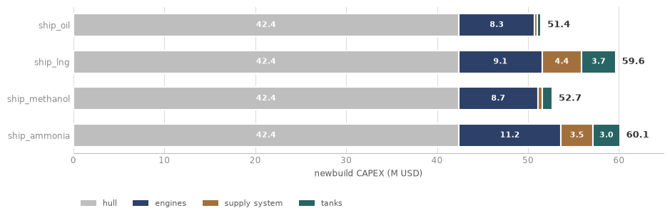
Retrofitting an existing ship, instead of replacing it:
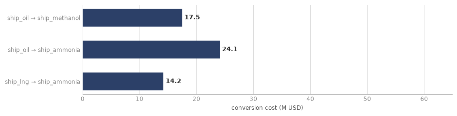
In this example, the newbuild hull is the same 42.4 M USD whichever fuel it burns, so the newbuild premium for going dual-fuel is entirely in the machinery (engines, supply system and tanks): about +1.2 M for methanol, +8.2 M for LNG, +8.7 M for ammonia over a plain oil ship. Ammonia and LNG machinery cost about the same, because both need containment and fuel-handling equipment that the oil ship does not. For LNG almost all of the premium is that equipment; ammonia adds a dearer engine on top of it.
The loss of cargo is deliberately not included in the base assumptions: with an optimized ship design it can be reduced to a negligible amount. (If needed, a number can however be added in the model by changing the Nominal Capacity of a specific ship.)
Important note: the ammonia ship is financed at an 11.05 % rate in the near future (due to a higher risk) against 8.89 % for the other three, easing back to the same 8.89 % by 2030 (when the technology is expected to have matured).
Efficiency technology on offer, and what is already fitted#
The assumptions library carries seven efficiency measures for this vessel class. This deck fits six of them, each with its own cost and saving:
Measure |
Saves |
CAPEX |
OPEX/yr |
Life |
|---|---|---|---|---|
Flettner rotor |
0.4 MW of external power |
2.0 M |
40 k |
25 yr* |
Hull painting |
5.0 % of propulsion |
200 k |
24 k |
5 yr, then repainted |
Propeller improvement devices |
2.0 % of propulsion |
150 k |
0 |
25 yr* |
Variable frequency drive |
10.0 % of electrical |
100 k |
5 k |
25 yr* |
Lighting system |
2.5 % of electrical |
100 k |
0 |
25 yr* |
Exhaust-gas boiler (aux) |
5.0 % of heat |
100 k |
10 k |
25 yr* |
* No lifetime is set, so the measure is never replaced: it stays on the ship until the ship leaves the fleet (at most 25 years, the library’s lifetime for this class).
Efficiency technologies are fitted on newbuild ships or during a retrofitting cycle that occurs every 5 years.
The fleet does not start empty, though. It starts with a share of each technology already fitted, set by set_initial_technology_share in includes/energy_efficiencies.inc from the world Panamax fleet’s shares in:
assumptions/defaults/installation/Curve/uptake_<measure>_bulk_carrier_panamax.inc
The Flettner rotor has no such curve, so it starts at zero.
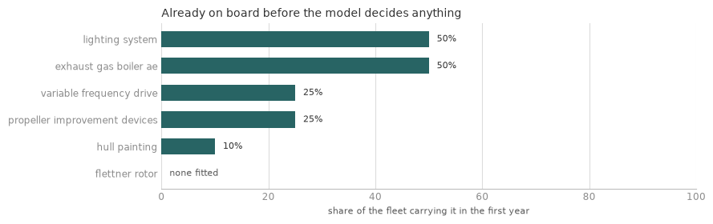
How sharply the operator reacts#
The decision sensitivities the .nav pulls in with Load DefaultCalibration
set how sharply the operator responds to a cost difference.
# The sensitivities that govern how strongly an advantage translates into a
# change of fuel, of hull, or of equipment. These are plain attributes on the
# Fleet.
print("Decision sensitivities (from DefaultCalibration):")
for label, value in [
("InterFuelSensitivity", fleet.inter_fuel_sensitivity),
("IntraFuelSensitivity", fleet.intra_fuel_sensitivity),
("FuelConversionSensitivity", fleet.fuel_conversion_sensitivity),
("TechnologySensitivity", fleet.technology_sensitivity),
]:
print(f" {label:28} {scalar(value):.2f}")
Decision sensitivities (from DefaultCalibration):
InterFuelSensitivity 0.75
IntraFuelSensitivity 0.75
FuelConversionSensitivity 2.00
TechnologySensitivity 2.00
Each sensitivity says how strongly the operator favours the cheaper option. A value close to 1 means it hardly cares about cost and spreads its choices evenly. A value far from 1 means it almost always picks the cheapest.
For the choice of fuel type, with \(c_i\) the levelized transport cost
of fuel type \(i\), \(s_i\) its share of the newbuilds and \(S\) the value of
InterFuelSensitivity:
Retrofits work the same way, but on NPV rather than cost. When a ship reaches a
retrofit cycle, each possible conversion is weighed against keeping the ship as
it is. With \(\mathrm{NPV}_i\) the net present value of conversion \(i\) (the fuel
savings over the ship’s remaining life, minus the conversion cost), CAPEX the
ship’s capital cost and \(S\) the value of FuelConversionSensitivity:
The figure below draws both formulas for a choice between two options. The bold line is the deck’s value, the dashed lines a less and a more decisive operator. Note that a conversion that only breaks even is as likely as keeping the ship.
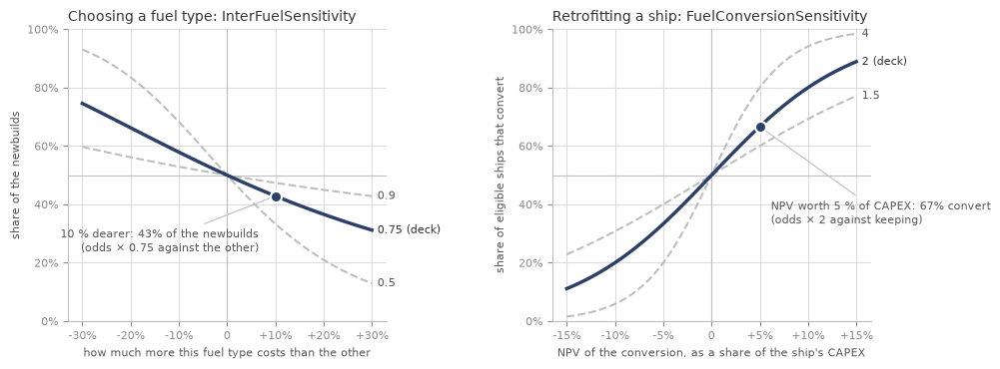
2. Data about the fuels#
We assume that fossil fuels (fuel oil and LNG) have a flat price until 2050.
Electricity is more than half of what an e-fuel costs to make, and up to about 80 %. It is assumed that it’s cost decreases in the future.
fig, (ax1, ax2) = plt.subplots(1, 2, figsize=(11, 3.6))
panel(ax1, [("fossil_fuel_oil_price_global", "Fuel oil"),
("liquefied_natural_gas_price_global", "LNG")],
"What it has to beat: fossil bunker prices", "USD/ton")
panel(ax2, [("electricity_cost_americas_mid", "Chile"),
("electricity_cost_europe_mid", "Europe")],
"The main input to an e-fuel: electricity", "USD/MWh")
fig.tight_layout()
plt.show()
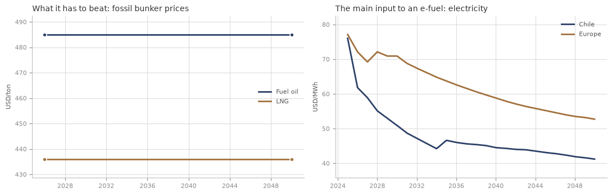
The synthesis and electrolyser cost tables are real inputs and are currently flat in time. Learning rates (costs falling as more capacity is built) may be added in a future version of Navigate.
For bio-methanol, the CAPEX is a forecast that falls over time.
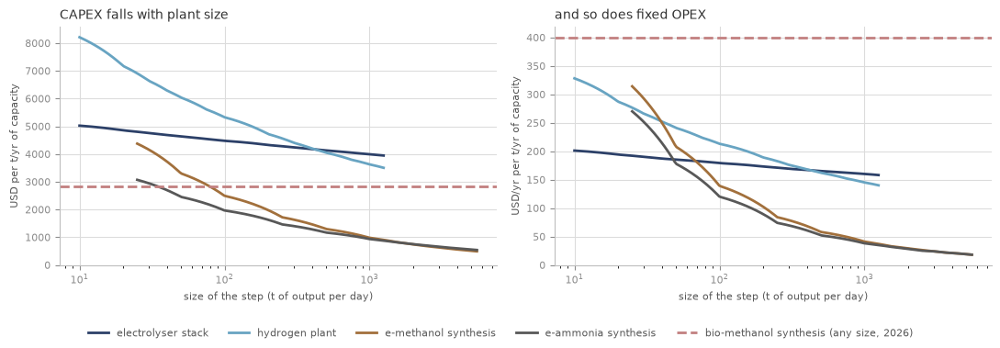
| inputs per t of output | electricity (MWh/t) | life (yr) | |
|---|---|---|---|
| step | |||
| electrolyser stack | 10.00 t demineralized_water | 51.00 | 10.0 |
| hydrogen plant | 1.00 t electrolysis_stack_alkaline | 4.00 | 20.0 |
| e-methanol synthesis | 0.19 t hydrogen_electro_alkaline, 1.40 t carbo... | 1.55 | plant's |
| e-ammonia synthesis | 0.18 t hydrogen_electro_alkaline, 0.82 t nitro... | 0.44 | plant's |
| bio-methanol synthesis | 2.42 t feedstock_biomethanol_gasification | 0.52 | plant's |
Bio-methanol is costed per ton, not by size: CAPEX 2,840 USD per t/yr of capacity in 2026, fixed OPEX 400 USD/yr per t/yr.
Feedstock prices (USD/t): carbon_dioxide_biogenic 150, feedstock_biomethanol_gasification 65, demineralized_water 2
Feedstock availability#
Fuels that contain carbon can be limited by how much of their carbon source exists. Bio-methanol needs gasifiable biomass, and e-methanol needs biogenic CO2.
Each cap is set in includes/producer.inc, on the producer that uses the feedstock,
and covers all of that producer’s plants. The library gives the world’s supply and
the share of it shipping could use; the deck keeps only a small slice of that for
this one trade.
The cell below shows how much of each feedstock is available in this example.
Gasification feedstock ceiling 0.81 Mt/yr in 2026, rising to 0.95 by 2050
Biogenic CO2 (PS) ceiling 0.14 Mt/yr in 2026, rising to 0.53 by 2050
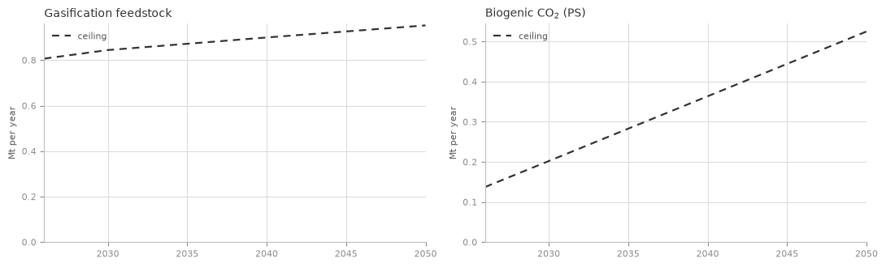
3. Data about bunkering#
A fuel’s production cost is not what a ship pays. The deck adds distance × rate from the plant to the bunker port. It means that fuel is cheap at the port next door and
carries a penalty at the far one.
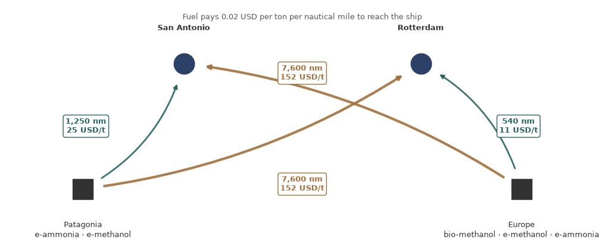
4. Data about the regulations#
Four numbers govern how hard the two instruments press: the allowance price,
the intensity target, the penalty for missing that target, and how
much of the voyage is counted at all. The first two are Forecasts and are
plotted below; the third is a single Variable; the fourth was set back in
Part 1, as Jurisdiction and the three coverage fractions.
One structural fact is worth holding while reading them. The EU ETS is
Scope = TTW, so it zero-rates the combustion carbon of every alternative
fuel — e-ammonia, e-methanol and bio-methanol carry the same factors per ton,
leaving only their methane and nitrous oxide to charge. FuelEU is
Scope = WTW, so it can influence the choices between the different
alternative fuel supplies.
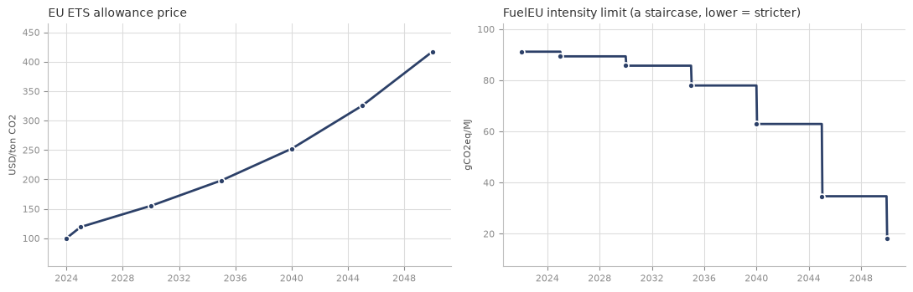
ETS allowance (USD/ton CO2) 100.0 (2024) -> 417.0 (2050)
FuelEU limit (gCO2eq/MJ) 91.2 (2022) -> 18.2 (2050)
FuelEU penalty for missing the cap 760.0 USD/ton, flat
EU ETS phase-in at the 2026 start 100% of emissions priced
The ETS price climbs steadily and the FuelEU limit hardly moves before 2035, then falls away in steps. So the pressure arrives early as a price and late as a cap. Breaching the cap leads to a 760 USD/ton penalty which is the strongest single lever in the deck.
What each regulation actually counts#
The Scope (WTW or TTW) decides which part of the fuel chain is counted for taxation. The graph below shows what is counted for each regulation.
The two e-fuels have no WTT written in fuel_eu.inc on purpose: Navigate derives theirs from the production chain the deck defines since they have no regulatory default values.
The same fuel can also score a different TTW for FuelEU and EU ETS because each regulation carries its own emission factors.
FuelEU is WTW, so it charges the full combustion carbon of the molecule at the funnel. Bio-methanol is charged 72 gCO2eq/MJ TTW (the same as e-methanol, because burning either releases the same carbon). In case of biogenic carbon use, the WTT component is credited with a negative value. That is not a modelling shortcut: the regulation derives the WTT from the lifecycle value on the fuel’s Proof of Sustainability, reduced by the combustion carbon.
The EU ETS is TTW. It zero-rates the combustion CO2 of bio- and e-fuels. So for bio-methanol the TTW is about 2 (for N2O and CH4 emissions).
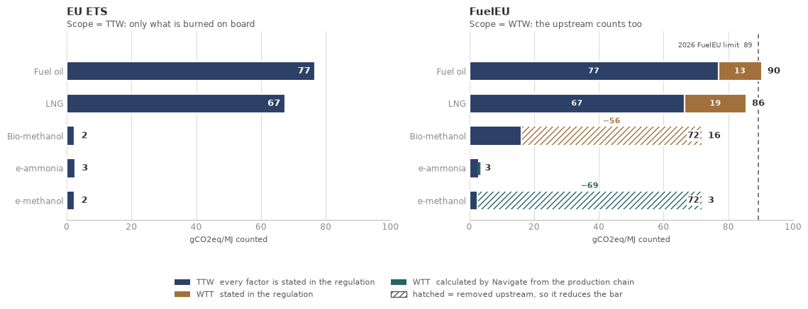
When reading across the two panels you can see that, for bio-methanol, EU ETS gives 2 gCO2e/MJ of TTW emissions and FuelEU 16 gCO2e/MJ. The gap between those totals is bio-methanol’s own production footprint: about 14 gCO2eq/MJ of growing, gasifying and shipping the biomass. FuelEU counts it; the ETS never looks upstream, so it cannot see it. The ETS therefore scores bio-methanol some 97 % better than fuel oil where FuelEU says 82 %.
Part 3: Understand the logic behind the model#
The idea of Navigate is to mimic the decision behavior of fleet owners and operators and fuel plant owners to understand how the fleet transition may evolve under a given set of conditions.
The aim of this section is to go “inside Navigate’s mind” and understand how the model solving actually works, step by step.
One time step, from the inside: 2027#
Stage 0 — Initialization#
A time step starts with an initialization. It inherits a fleet with an age structure, plants that were sanctioned years ago, and two regulations whose terms for this year are already fixed.
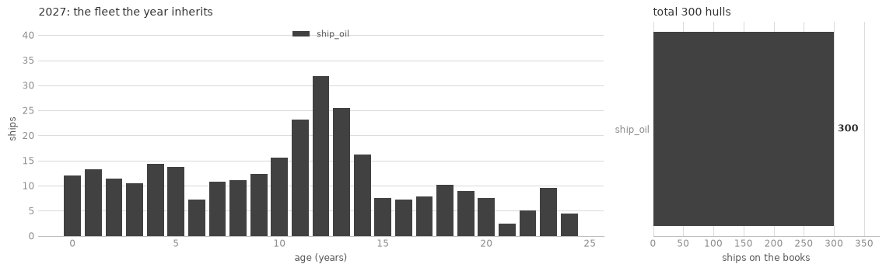
25 live cohorts: decisions are taken per cohort, against that cohort's own remaining life.
this year's regulatory terms:
eu_ets unit cost 133.4 USD/ton limit: no free allowance
fuel_eu unit cost 760.0 USD/ton limit: 89.34 gCO2eq/MJ
Stage 1 — Look ahead#
In this step, the fleet operator calculates the costs of different bunkering strategies for the different available fuels given:
the expected future compliance costs (induced by regulations)
the expected fuel costs
how much of each fuel the ports can supply, and how much fits in the tanks
The fleet operator calculates the expected optimal strategy for his fleet and evaluates: how many tons of which fuel to buy at which port, the cheapest strategy between switching fuel or paying the regulation penalty. It is solved for the whole fleet at once — in fact for every fleet in the simulation — so the ships compete for the same supply. The expenses of new build ships, retrofits, etc. are not considered at this stage yet.
The cheapest bunkering strategy is solved forward: one optimisation for each remaining year out to 2050, run one after another.
The step hands a cost path per option to the stages below, and that is what the investment decisions are made on. It produces a second output as well: the fuel scarcity signal. For every ship and every leg the optimisation reports the shadow price of energy (what one more unit of energy would have cost). It is the ordinary fuel price when fuel is plentiful and rises above it when the supply is tight. This number is used to act on efficiency and speed decisions for the on-going year.
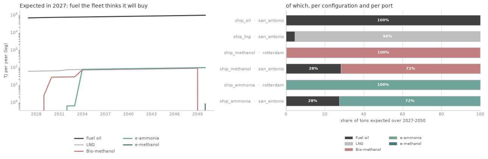
ship_oil expects 100% of its tons to be oil
ship_lng expects 4% of its tons to be oil
ship_methanol expects 18% of its tons to be oil
ship_ammonia expects 18% of its tons to be oil
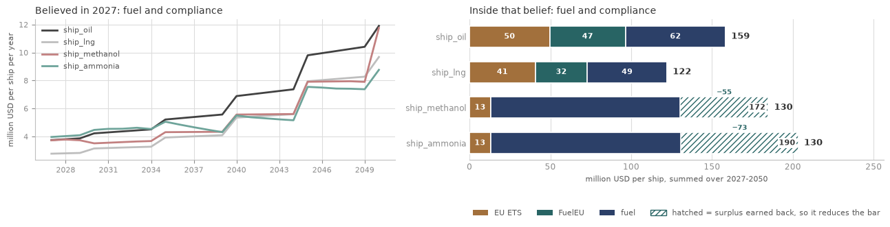
believed cost of missing the mark, this year:
eu_ets 133.4 USD/ton
fuel_eu 760.0 USD/ton
Nothing has been decided yet. This is only what the model believes.
Stage 2 — Decide#
The fleet owner’s decisions are taken in this order, based on the beliefs formed in the previous stage:
Technology: equipment fitted to a ship to reduce its fuel consumption
Speed: how fast to sail, within the band the deck allows
The scorecard: an investment freight rate per configuration leading to a configuration ranking
The fleet: depending on the ranking: scrap hulls, retrofit for fuel conversions and order newbuilds
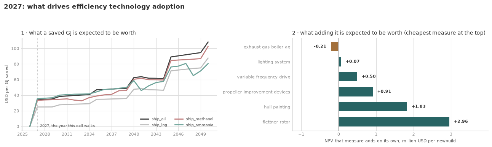
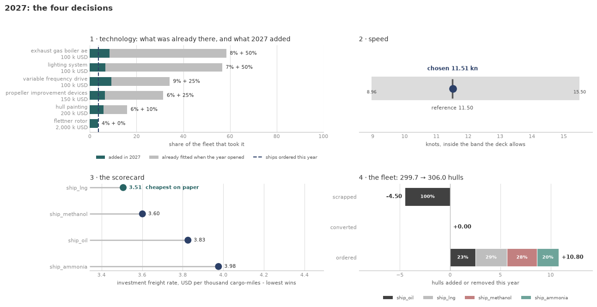
Stage 3 — The producer decides too#
The operator and the producer read and write shared state: the fleet’s expected bunkering is the producer’s order book, and the plants’ output is the fleet’s available supply.
There is an intentional structural lag between the two. The demand is taken directly from the expected bunkering calculated previously in the time-step, so it does not account for the newest fleet evolution but rather a time-lagged view. The producer is acting on the demand figure computed earlier in this same year — before the newbuilds and retrofits we just watched.
In this example the build-rate ceiling (max number of plants that can be built) is voluntarily not binding, though the gasifiable-biomass feedstock ceiling is. Both can be investigated in the sensitivity analysis section.
Check navigate/fuel/supply_demand.py and _calculate_expected_fleet_fuel_demand for more details.
=== 2027: what the producer saw, and did ===
the demand vector it read (this year's forward view, first year):
fossil_fuel_oil 66,001.3 TJ/yr ( 1,602.0 kt/yr)
liquefied_natural_gas 57.3 TJ/yr ( 1.2 kt/yr)
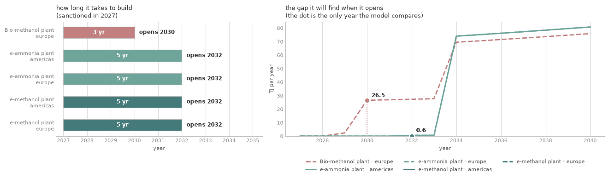
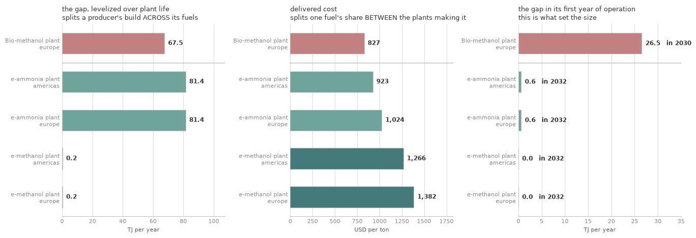
the groups in 2027, after plants with no gap are dropped:
producer_biofuel methanol_bio 1 plant in demand
producer_efuel ammonia_electro 2 plants in demand
producer_efuel methanol_electro 2 plants in demand
Neither producer came near its build-rate ceiling:
producer_biofuel 0.0027 of 8.31 plants ( 0.03% of the ceiling)
producer_efuel 0.0003 of 8.31 plants ( 0.00% of the ceiling)
Stage 4 — Commit: the bunkering algorithm that binds#
The forward optimization bunkering algorithm of Stage 1 was a belief. Now the year is bought for real, with the new fleet from this year and against what the producers actually delivered.
=== 2027: the bunkering plan, tons per ship ===
fuel san_antonio
fossil_fuel_oil 16,544
liquefied_natural_gas 4,316
what the voyage actually cost this year: 3.52 USD per thousand cargo-miles
Note which fuels appear against which port, and that a dual-fuel hull
can still bunker oil. Ordering the ship and burning the fuel are two
different decisions.
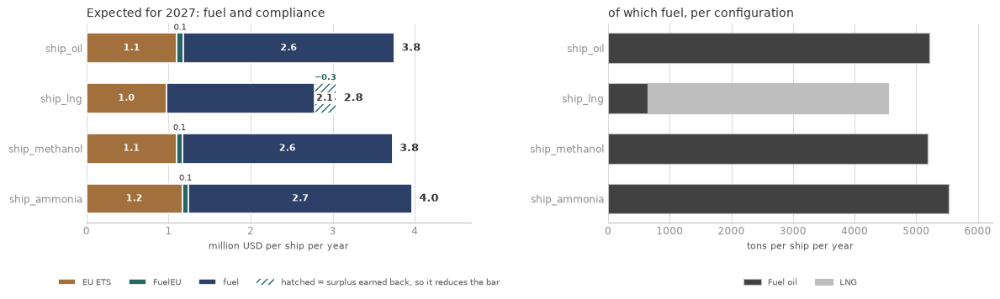
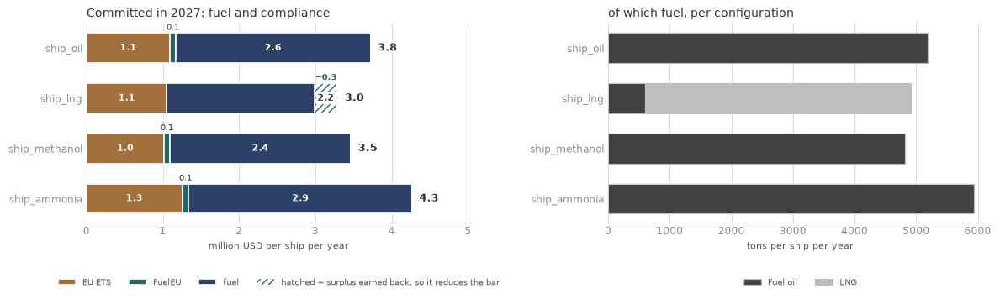
=== 2027: expected against committed, per ship ===
tons bunkered total bill, M USD
expected committed gap expected committed gap
ship_oil 5,219 5,183 -0.7% 3.75 3.72 -0.7%
ship_lng 4,540 4,910 +8.1% 2.77 2.99 +7.7%
ship_methanol 5,188 4,825 -7.0% 3.73 3.47 -7.0%
ship_ammonia 5,522 5,942 +7.6% 3.97 4.27 +7.6%
The two gap columns are the same number. Nothing was mispriced: the
look-ahead in Stage 1 costed a fleet that Stage 2 then changed underneath
it - ordering, scrapping and fitting technology - and Stage 4 committed
whatever the resulting ships actually burned.
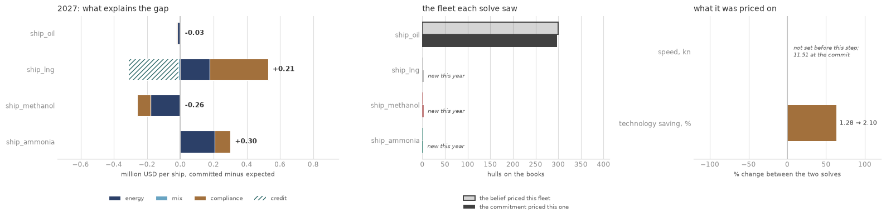
Both solves happen inside the same time step, about fifty lines apart in
navigate/manager.py: _calculate_expected_bunkering() at line 292 is the
belief, _perform_existing_bunkering() at line 345 is the commitment. Ten
calls sit in between, and six of them matter here — the scarcity signals
update, technology is installed, speed is managed, the fleet scraps and
orders, the producers evolve, and the fuel import and fair share are
recomputed.
So the belief is priced on last year’s speed and last year’s technology, for a fleet that has not yet changed. That is the whole of the gap, and the figure above breaks it into the pieces that can be measured:
energy — the ship needed more or less energy than the belief priced, because Stage 2 slowed it down and fitted efficiency to it afterwards;
mix — it was offered a different blend, so a different cost per GJ;
compliance — the emission bill that followed from that energy;
credit — the surplus a compliant ship is paid, which the belief nets into one number and the outturn books separately.
There is no price term, and that is not an omission: the deck’s bunker prices are identical in both solves, so every dollar of the fuel difference is energy or blend.
The middle panel is the blunt version. In 2027 the LNG, methanol and ammonia hulls did not exist when the belief was formed — they were ordered later in the same step — so their “expected” bill is a forecast for ships that were not yet on the books. By 2040 the fleet is large enough that the effect is a percentage rather than a category, and the right-hand panel takes over: the belief was priced at 10.90 knots and an 11.4% technology saving, the commitment at 10.53 knots and 12.5%.
The lag is the model, not a defect
Nothing here is an error to be corrected. An operator commits fuel on a view formed before it knows what it will decide this year, and Navigate reproduces that ordering deliberately. Expecting the two to agree would mean expecting the look-ahead to know the outcome of decisions it is itself an input to.
Nothing carries forward from a time step except the fleet, the plants and the numbers written into the profile arrays. Every belief we just read — the cost paths, the scorecard, the producer’s two axes — is about to be overwritten by next year’s look-ahead. That is why they had to be copied out while the step was still running.
Thirteen years on: the same step in 2040#
Tadaaa, we are now 13 years later (we repeated the 2027 step multiple times and we are now checking what happens at the year 2040). The logic is the same as before but the conditions have changed.
2027 2040
------------------------------------------------------------
eu_ets: unit cost, USD/ton 133.39 252.00
fuel_eu: unit cost, USD/ton 760.00 760.00
fuel_eu limit, gCO2eq/MJ 89.34 62.90
conversions in 2027: none - no cohort was both in a retrofit cycle and worth converting
conversions in 2040: none - no cohort was both in a retrofit cycle and worth converting
Stage 0 — Initialization (2027 vs 2040)#
# Stage 0, both years. Same function, same scale: what the year inherits.
fig, axes = plt.subplots(2, 2, figsize=(11.5, 7.4),
gridspec_kw={"width_ratios": [2.5, 1]})
for row, step in enumerate((STEP_EARLY, STEP_LATE)):
draw_inherited(step, axes[row], scale_over=(STEP_EARLY, STEP_LATE), legend=row == 0)
fig.tight_layout()
plt.show()
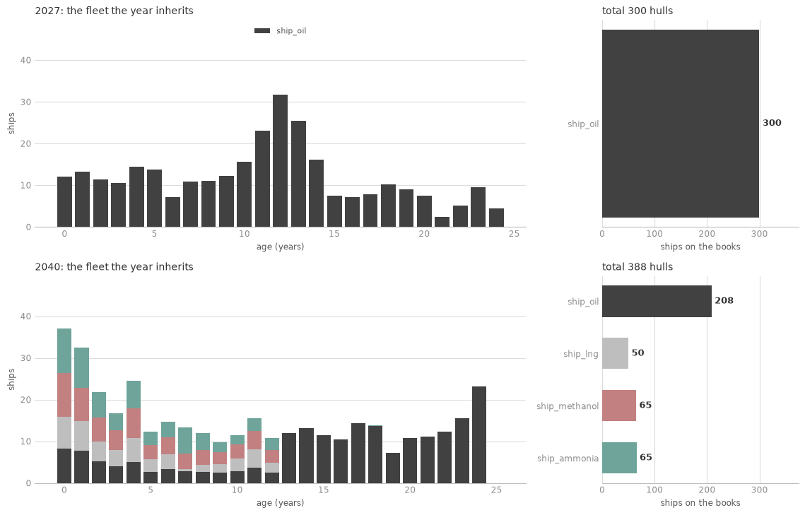
Stage 1 — Look ahead (2027 vs 2040)#
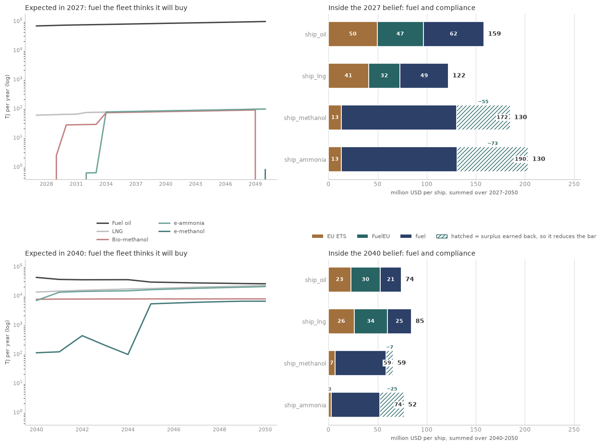
Stage 2 — Decide (2027 vs 2040)#
# Stage 2, both years. Four panels per year will not fit across one row, so here
# the YEAR IS THE COLUMN: 2027 on the left, 2040 on the right, each column in the
# same order as the 2×2 above - technology, speed, scorecard, fleet.
fig, axes = plt.subplots(4, 2, figsize=(13, 14.5))
for col, step in enumerate((STEP_EARLY, STEP_LATE)):
draw_four_decisions(step, axes[:, col], scale_over=(STEP_EARLY, STEP_LATE),
legend=col == 0)
# get_title() returns the CENTRE title, which is empty here - every title in
# this notebook is set loc="left" - so ask for the one that exists.
axes[0][col].set_title(f"{YEARS[step]}\n" + axes[0][col].get_title(loc="left"),
fontsize=10, color=INK, loc="left")
fig.tight_layout(rect=(0, 0.01, 1, 1))
plt.show()
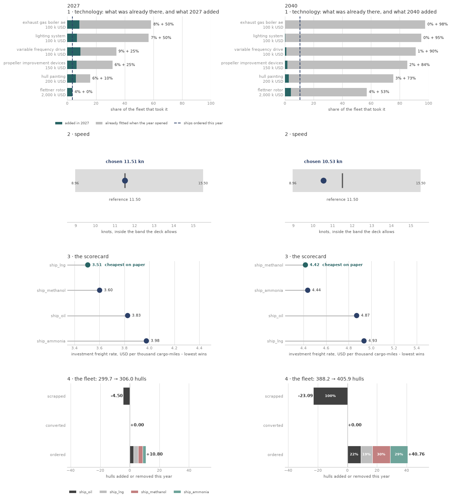
Stage 3 — The producer decides too (2027 vs 2040)#
# Stage 3, both years. This is the one to read closely: the e-fuel producer owns
# two sites for each of its fuels, so the delivered-cost axis splits each fuel's
# build between them, and it has two fuels in demand, so the gap axis splits
# across those. The biofuel producer has one plant and one fuel, so both axes
# are flat for it.
fig, axes = plt.subplots(2, 3, figsize=(13.8, 9.6))
for row, step in enumerate((STEP_EARLY, STEP_LATE)):
draw_producer_axes(step, axes[row], scale_over=(STEP_EARLY, STEP_LATE))
axes[row][0].annotate(str(YEARS[step]), (-0.34, 1.16), xycoords="axes fraction",
fontsize=12, color=INK, fontweight="bold")
fig.tight_layout()
plt.show()
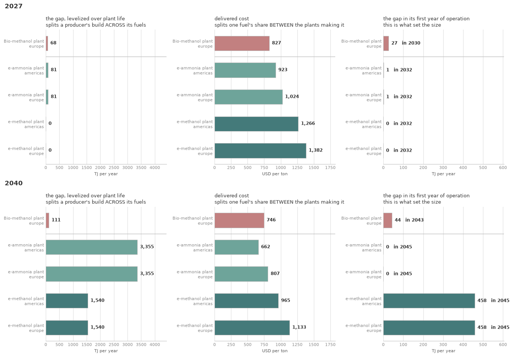
Stage 4 — Commit: the bunkering algorithm that binds (2027 vs 2040)#
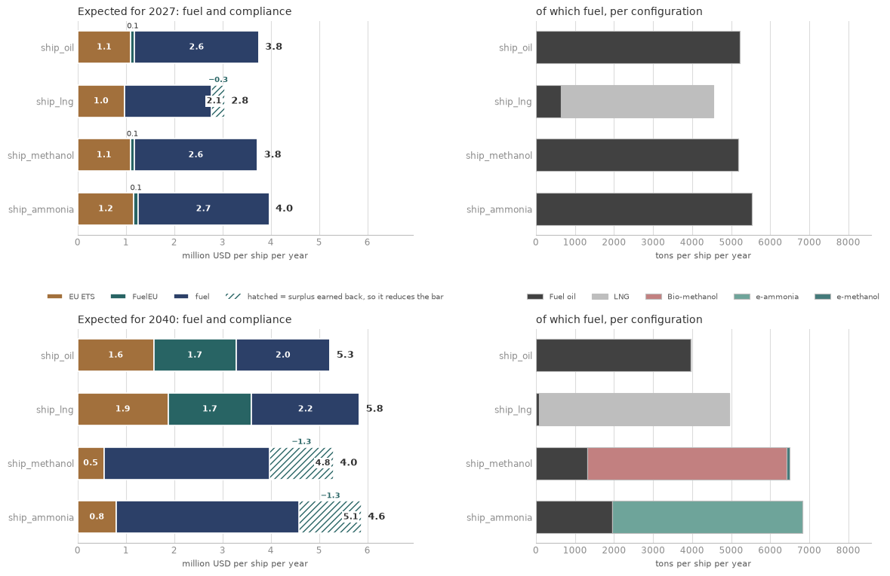
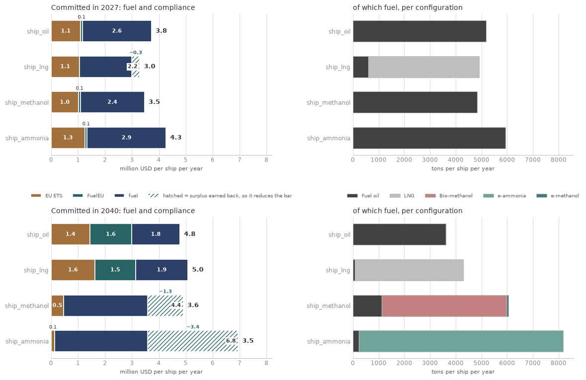
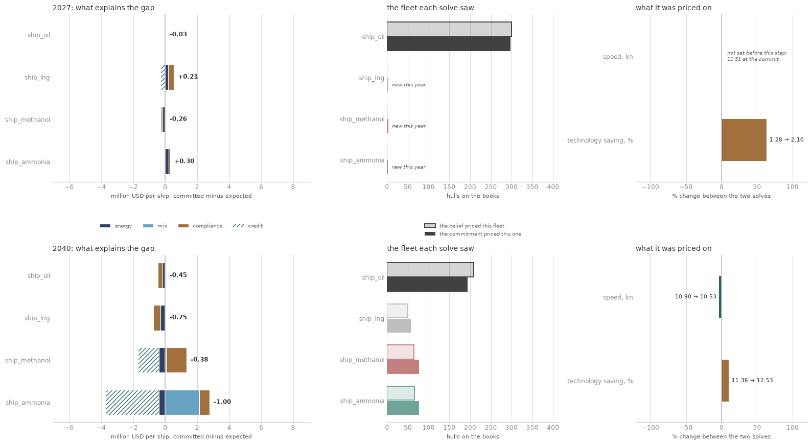
Three conditions moved, and each stage answered differently.
Efficiency spread across the fleet. Every measure is on offer from the first year, but in 2027 a saved GJ is worth too little to carry the dearer ones, so the fleet buys only the cheap rungs. By 2040 the signal has roughly doubled and it has climbed further up the ladder — the one condition that moved because energy got dearer rather than because a price in the deck changed.
The fleet slowed down. In 2027 it sailed at its reference speed, seeing no reason to do otherwise; by 2040 it is a knot below. Slow steaming is compliance bought without buying anything, and it only becomes worth the lost cargo-miles once the shadow price of energy is high enough.
Conversion never fired. Neither year converted a single hull: no cohort was both in a retrofit cycle and worth converting. The fleet changed its fuel by ordering and scrapping instead — 11 ships ordered in 2027 against 41 in 2040, with scrapping rising from 4.5 to 23.
And the two instruments move apart rather than together. The ETS buys fewer units in 2040 than in 2027 — 1.7 million against 2.5 — yet its bill still rises, from 335 to 420 M USD, because the allowance price nearly doubles from 133 to 252 USD/ton. FuelEU moves the other way and much harder: 23 M USD in 2027 against 389 in 2040, a seventeenfold rise, because its limit tightens from 89 to 63 gCO2eq/MJ faster than this fleet cleans up. The gap keeps widening — by 2050 FuelEU charges 640 M USD a year against the ETS’s 449. The intensity cap, not the carbon price, is what ends up biting.
Now run all twenty-five#
Nothing new is computed from here on. This is the same solve, read across all of its time steps instead of one — the walkthrough above was two of the twenty-five years this already contains.
1. What the fleet did#
What the fleet became, and how it got there#
Two views of one thing: what the fleet is at each date, and where each configuration came from — a hull the operator already owned, converted, or a new one ordered.
Retrofits arrive in bursts rather than a trickle, and the bursts are the
mechanism showing through: Navigate does not average 300 ships into one
representative hull, it builds one cohort per row of the age curve and runs
a separate logit for each, scored on that cohort’s own remaining life and its
own NPV.
RetrofitFrequency and FuelConversionMinimumAge then gate which cohorts are
asked at all, so in a given year only four or five of the twenty-five are
offered the choice.
The fleet grows from 300 hulls to roughly 490, because TradeGrowth is switched
on in includes/fleet.inc — about 2.2 % a year, easing to 1.4–1.5 % from 2030 — so an
order is no longer necessarily a replacement. What the growth does not change
is the mix: turn it off and the 2050 shares move by well under a percentage
point each.
fleet 300 -> 489 hulls; over the horizon 477 ordered, 38 converted, 288 scrapped
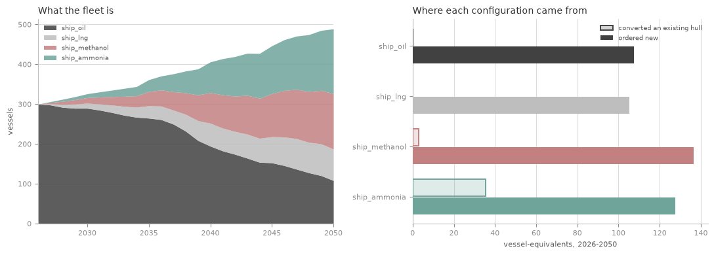
Energy efficiency over the horizon#
Switching fuel and slowing down are not the only ways to cut emissions. The third is to need less energy for the same voyage. Part 2 lists the six measures this deck offers and what each one costs; this is when the model actually fitted them. What they turn out to be worth is a Part 4 question.
technology energy saving: 2026 1.3% 2038 10.8% 2050 17.1%
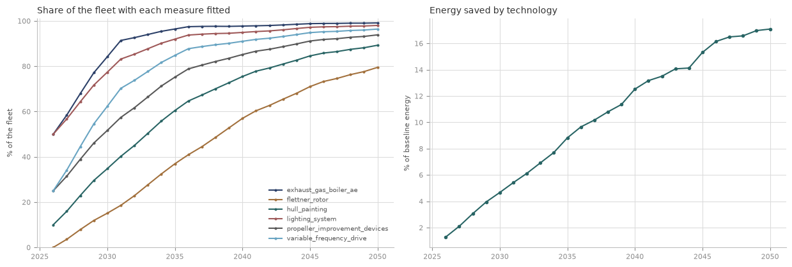
2. What the fuels did#
What each fuel costs to make#
The plant and process economics: what each pathway’s fuel costs to make at the plant, before it is shipped to a bunker port.
An e-fuel plant sanctioned in 2040 is still cheaper, but only because it is bigger (economies of scale on both CAPEX and OPEX) and because the electricity price forecasts fall.
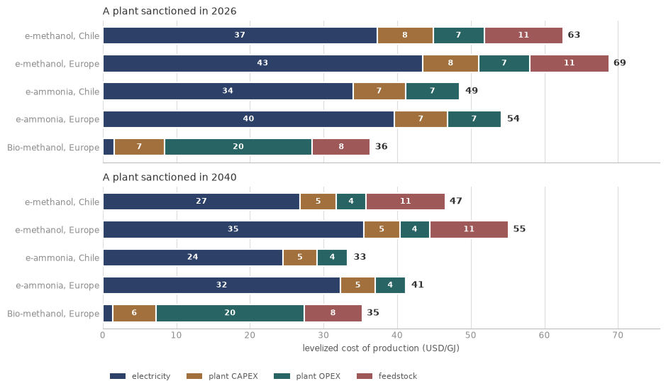
What it bunkers, and when#
The headline result, and the question the case opened with. Shares of energy, not of hulls — a dual-fuel ship that bunkers oil counts as oil here.
Share of total energy over 2026-2050:
Fuel oil 67.0%
LNG 11.7%
Bio-methanol 7.7%
e-ammonia 11.3%
e-methanol 2.3%
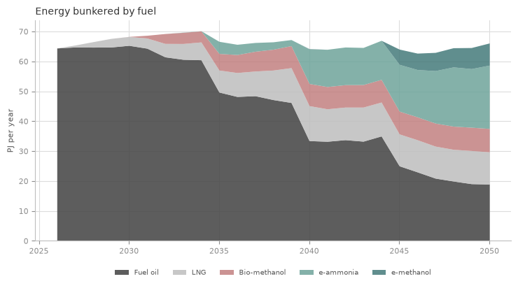
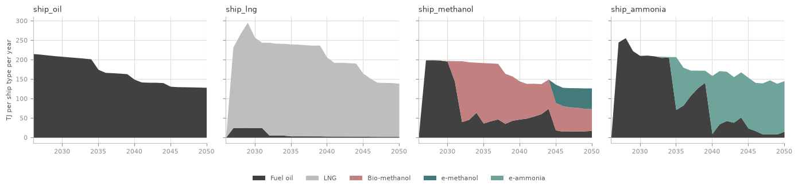
What the feedstock ceilings decided#
Part 2 drew these two ceilings as the deck sets them. Here they are again with what the run actually drew against them, which is what settles whether a ceiling was ever more than a line on a chart.
The two bite very differently: biomass runs short from 2038 and stays short, so it shapes the second half of the horizon, while biogenic CO2 only catches up with the plants drawing on it in the last years. A ceiling matters where the line meets it, not because it is there.
Gasification feedstock ceiling 0.95 Mt/yr by 2050, binds from 2038, in 13 of 25 years
Biogenic CO2 (PS) ceiling 0.53 Mt/yr by 2050, binds from 2049, in 2 of 25 years
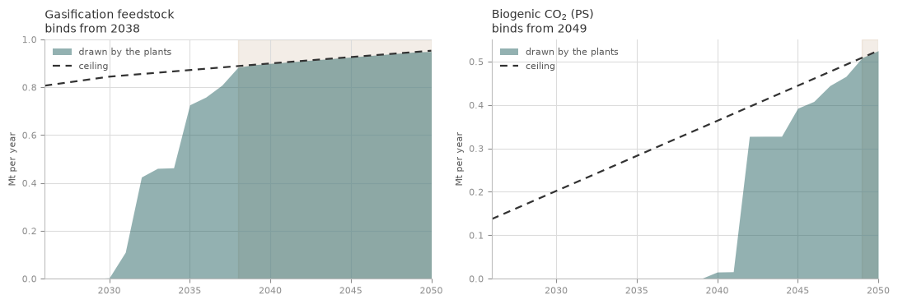
What the producers sanctioned, and the lag before it arrives#
Stage 3 showed the two axes a producer chooses on, for one year. This is what those choices added up to over the horizon — and what the fleet could actually burn as a result.
The two actors never talk to each other. They read and write shared state: the operator’s expected bunkering is the producer’s order book, and the producer’s output is the supply the operator can buy. The lag is deliberate. The demand figure a producer acts on is the fleet’s expectation computed earlier in the same time step, before that year’s newbuild and retrofit decisions, and the plant’s build lead time comes on top of that.
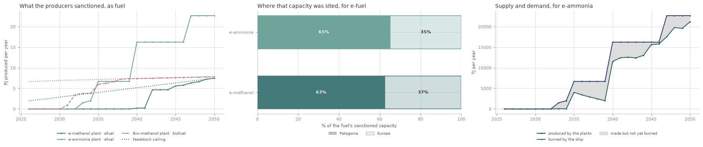
first capacity sanctioned: 2028
first e-ammonia burned: 2032
production vs delivery, largest gap over the horizon: 0.0 TJ/year
The e-fuel producer owns both sites for each of its fuels, so it splits
its build between them on delivered cost instead of picking one.
3. What the regulations did#
Both schemes have been charging the fleet all along. The first panel is the one that decides it: where each configuration’s blended intensity sits against the FuelEU limit, on green ground where it earns surplus and red where it buys compliance.
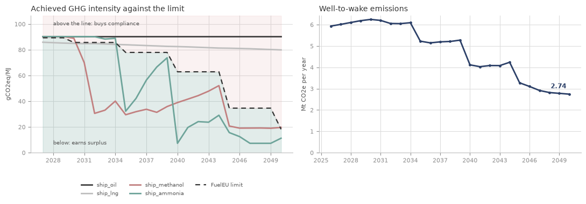
well-to-wake 2026: 5.93 Mt/yr 2050: 2.74 Mt/yr over the horizon 119.1 Mt
EU ETS 2027: 335 M USD 2050: 449 M USD over the horizon 10,514 M USD
FuelEU 2027: 23 M USD 2050: 640 M USD over the horizon 6,172 M USD
ship_oil below the limit in 0 of 24 years
ship_lng below the limit in 8 of 24 years
ship_methanol below the limit in 19 of 24 years
ship_ammonia below the limit in 16 of 24 years
4. What the trade cost#
The number a cargo owner actually feels. Two views, both in USD per thousand cargo-miles - the unit Navigate’s own plots use:
The instantaneous freight rate on the fleet: what the trade cost in that year, given the fuel prices and compliance bills that actually materialised.
The investment freight rate on each vessel configuration: the forward-looking, levelized cost of transport. This is the number the discrete-choice model compares between configurations, so it is what explains why one was picked. A configuration that is not in the fleet in a given year has no value and simply does not plot.
instantaneous freight rate 2026: 3.48 2050: 4.74 (+36%)
In the right-hand panel, whichever configuration sits lowest in a given
year is the one most likely to be ordered that year. That crossover is
the mechanism behind the fuel mix in section 2.
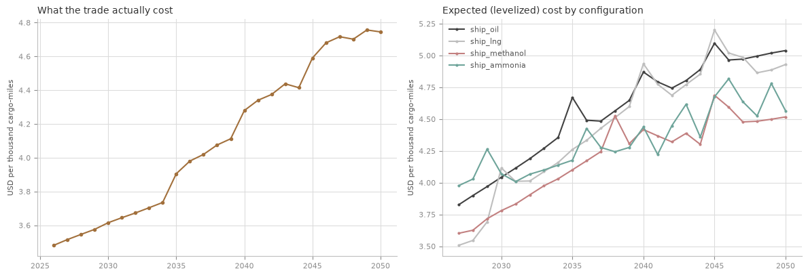
Who decided what#
Every result in this session comes from one of four mechanisms. Worth keeping straight, because they fail in different ways and respond to different inputs.
Result you saw |
Actor |
Mechanism |
Turn it with |
|---|---|---|---|
Which fuel is bunkered where, each year |
operator |
linear program, all vessels at once, cost minimising |
prices, supply, regulation |
Speed, and fitting efficiency technology |
operator |
heuristic on shadow prices from the LP duals |
|
Retrofit or not |
operator |
logit on NPV against ship CAPEX |
|
Newbuild mix |
operator |
two-axis logit on levelized transport cost |
|
Scrapping |
operator |
age rule, not a choice at all |
|
Which plants get built |
producer |
two-axis logit on demand then delivered cost |
|
Compliance cost |
regulation |
exogenous, no reaction |
the regulation files |
Cargo carried |
nobody |
exogenous, no demand response |
|
The last two are the ones to say out loud in a workshop. The regulator never responds to the emissions it sees, and the cargo owner never responds to the freight rate. So the 2050 cost increase above is absorbed in full by the cargo owner, because the model gives them no way out.
The Turn it with column is the agenda for Part 4: every one of those is an input we can change to see how much of the answer it was holding up.
Part 4: Sensitivity analysis#
The baseline is one answer under one set of assumptions. What matters is which of them it depends on — so this part turns the dials from the table that closed Part 3 and puts your version beside the reference.
Run the cell below to prepare the sensitivity analysis.
the reference, 2026-2050
well-to-wake in 2026 5,935 kt CO2e/yr
well-to-wake in 2050 2,744 kt CO2e/yr
cumulative over the horizon 119,139 kt CO2e
alternative fuels in 2050 55.0 %
freight rate in 2050 4.74 USD per k cargo-mile
the levers, and what the deck says today
2026 2050
OIL_PRICE fossil bunker fuel 485 485 USD/t
GAS_PRICE fossil LNG 436 436 USD/t
CARBON_PRICE EU ETS allowance 126 417 USD/t
FUELEU_TARGET the FuelEU intensity limit 89.3 18.2 gCO2eq/MJ
CHILEAN_POWER electricity at the Patagonian plants 62 41 USD/MWh
EUROPEAN_POWER electricity at the European plants 72 53 USD/MWh
BIOMASS the global gasifiable biomass pool 1,152 1,361 Mt/yr
BIOGENIC_CO2 the global biogenic CO2 pool 92 350 Mt/yr
TRADE_GROWTH growth of the copper trade 2.2 1.5 %/yr
FUELEU_PENALTY a ton of excess emission 760 760 USD/t
INTER_FUEL newbuild mix, between fuel types 0.75 0.75 odds ratio
FUEL_CONVERSION whether to retrofit an existing hull 2.00 2.00 odds ratio
TECHNOLOGY whether to fit efficiency technology 2.00 2.00 odds ratio
The levers#
The results of the previous cell give you the value of some levers in the reference scenario that we have been using throughout this part of the workshop. Use the cell below to change the original values and see what happens!
All levers that we prepared can be changed with multipliers, except two that can be used as switches:
FULL_COVERAGEputs San Antonio inside both regulatory schemes.FREEZE_EFFICIENCYstops anything further being fitted, on newbuilds as well as on retrofits.
One last group changes the operator rather than the world it operates in. These are not multipliers: each one is one of the sensitivities you met in Part 3 - the “behavioral traits” that turn a gap into a share - so you set the odds ratio directly, starting from the value the deck already carries:
INTER_FUEL(InterFuelSensitivity): how sharply it picks between fuel types when ordering a newbuild.FUEL_CONVERSION(FuelConversionSensitivity): how decisively it retrofits a hull it already owns.TECHNOLOGY(TechnologySensitivity): how decisively it fits efficiency technology.
The fourth one, IntraFuelSensitivity, has no lever because it cannot decide
anything here: it picks between ship designs burning the same fuel type, and
this deck has one design per type.
What an odds ratio is measured against depends on the metric. INTER_FUEL
runs on levelized transport cost, which is lower-is-better: it is the odds a
fuel gets when its cost is 10 % higher, so 0.5 halves them. It sits below 1,
and moving it further down makes the operator more decisive. The other two run
on NPV: they are the odds an option gets when its NPV advantage is worth 5 % of
the ship CAPEX, so 2 doubles them. They sit above 1, and moving them up does
the same. Push any of them towards 1 and the operator stops
caring, spreading its orders evenly instead.
Because these are calibration rather than assumptions about the world, treat what they do as a check on how much the answer rests on the model of the operator, not as scenarios you could go out and bring about.
GAME: Find out which scenario (realistic?) leads to the lowest emissions and transport costs by 2050!
# ===========================================================================
# YOUR SCENARIO. Set a lever, run the cell, read the answer below it.
#
# Every number down to TRADE_GROWTH is a MULTIPLIER on what the deck already
# says, so 1.0 is the reference. The cell above printed what each 1.0 is worth
# at both ends of the horizon, so you can judge whether a factor of two is a
# big change or a small one. The BEHAVIOR block at the bottom is not like that:
# those are the values themselves, and they start at the deck's own. The
# right-hand column repeats that table for convenience; the printed one is read
# off the parsed deck, so trust it if the two ever disagree.
#
# suggested span what 1.0 means in the deck
OIL_PRICE = 1.0 # 0.7 - 1.6 485 USD/t, flat to 2050
GAS_PRICE = 1.0 # 0.7 - 1.6 436 USD/t, flat to 2050
CARBON_PRICE = 1.0 # 0.5 - 3.0 126 USD/t in 2026, 417 by 2050
FUELEU_TARGET = 1.0 # 0.3 - 1.2 89.3 gCO2eq/MJ in 2026, 18.2 by 2050; under 1.0 is STRICTER
FUELEU_PENALTY = 1.0 # 1.0 - 5.0 760 USD/t of excess emission, flat
CHILEAN_POWER = 1.0 # 0.6 - 1.4 62 USD/MWh in 2026, 41 by 2050
EUROPEAN_POWER = 1.0 # 0.6 - 1.4 72 USD/MWh in 2026, 53 by 2050
BIOMASS = 1.0 # 0.1 - 10.0 1,152 Mt/yr pool in 2026, 1,361 by 2050; this ceiling BINDS
BIOGENIC_CO2 = 1.0 # 0.5 - 2.0 92 Mt/yr pool in 2026, 350 by 2050; binds 2049, gone by x2
TRADE_GROWTH = 1.0 # 0.0 - 2.0 2.2 %/yr in 2026, 1.4-1.5 %/yr from 2030
# 1.0 = the deck's growth; 0.0 = trade stays at its 2026 volume;
# -1.0 = trade shrinks as fast as it would have grown
FULL_COVERAGE = False # San Antonio inside both schemes: the whole voyage counts
FREEZE_EFFICIENCY = False # nothing further gets fitted, newbuild or retrofit
# BEHAVIOR. Not a price and not a rule: how the operator itself decides, one
# lever per decision. These are the odds ratios themselves, NOT multipliers,
# and they start at what the deck says. Which way sharpens differs by metric.
#
# suggested span which way is sharper
INTER_FUEL = 0.75 # 0.3 - 0.95 LOWER is sharper: LCOT, lower-is-better
FUEL_CONVERSION = 2.0 # 1.2 - 16 HIGHER is sharper: NPV against ship CAPEX
TECHNOLOGY = 2.0 # 1.2 - 16 HIGHER is sharper: NPV on the measure
# ===========================================================================
from matplotlib.ticker import MaxNLocator
MULTIPLIERS = [("OIL_PRICE", OIL_PRICE, "fossil_fuel_oil_price_global"),
("GAS_PRICE", GAS_PRICE,
"liquefied_natural_gas_price_global"),
("CARBON_PRICE", CARBON_PRICE, "eu_ets_carbon_credit_price"),
("FUELEU_TARGET", FUELEU_TARGET, TARGET),
("CHILEAN_POWER", CHILEAN_POWER, "electricity_cost_americas_mid"),
("EUROPEAN_POWER", EUROPEAN_POWER, "electricity_cost_europe_mid"),
("BIOMASS", BIOMASS,
"feedstock_biomethanol_gasification_availability"),
("BIOGENIC_CO2", BIOGENIC_CO2, "carbon_dioxide_biogenic_availability"),
("TRADE_GROWTH", TRADE_GROWTH, "trade_growth_bulk_carrier")]
# Trade is compounded as log(1 + growth), so a year shrinking by 100 % or more has
# no meaning - say so here rather than let the solve fail on it.
_growth = base.nodes.forecasts["trade_growth_bulk_carrier"]
if min(TRADE_GROWTH * _growth.calculate(_d) for _d in base.get_timeline()) <= -1.:
raise ValueError(f"TRADE_GROWTH = {TRADE_GROWTH} would make trade shrink by 100 % "
"or more in a year. Pick a value closer to zero.")
CHANGED = [(n, v) for n, v, _ in MULTIPLIERS if v != 1.0]
TWEAKS = [scale(t, v) for n, v, t in MULTIPLIERS if v != 1.0]
if FUELEU_PENALTY != 1.0:
CHANGED.append(("FUELEU_PENALTY", FUELEU_PENALTY))
TWEAKS.append(penalty(FUELEU_PENALTY))
if FULL_COVERAGE:
CHANGED.append(("FULL_COVERAGE", True))
TWEAKS.append(chile_in_scope)
if FREEZE_EFFICIENCY:
CHANGED.append(("FREEZE_EFFICIENCY", True))
TWEAKS.append(without_new_technology)
BEHAVIOR = [("INTER_FUEL", INTER_FUEL, "inter_fuel"),
("FUEL_CONVERSION", FUEL_CONVERSION, "fuel_conversion"),
("TECHNOLOGY", TECHNOLOGY, "technology")]
CHANGED += [(n, v) for n, v, a in BEHAVIOR if v != REFERENCE_ODDS[a]]
TWEAKS += [sensitivity(a, v) for _n, v, a in BEHAVIOR if v != REFERENCE_ODDS[a]]
if not TWEAKS:
print("Every lever is still at its reference, so this would just re-solve it.")
print("Change one of the numbers above and run this cell again.")
else:
print("solving your scenario:")
for _name, _value in CHANGED:
print(f" {_name:16} {_value}")
yours = run_case(both(*TWEAKS))
you = summarise(yours)
print(f"{chr(10)} {'':32} {'reference':>11} {'yours':>11} {'change':>13}")
for _label, _r, _y, _fmt, _pp in (
(f"well-to-wake in {YEARS[-1]}, kt/yr",
ref["wtw"][-1], you["wtw"][-1], ",.0f", False),
("cumulative, kt", ref["wtw"].sum(), you["wtw"].sum(), ",.0f", False),
# a share is already a percentage, so it moves in POINTS, not per cent
(f"alternative fuels in {YEARS[-1]}, %",
ref["alt_last"], you["alt_last"], ".1f", True),
(f"freight rate in {YEARS[-1]}, USD/k mile",
ref["freight"][-1], you["freight"][-1], ",.2f", False)):
_change = (f"{_y - _r:+.1f} pp" if _pp
else f"{100. * (_y / _r - 1.):+.1f} %")
print(f" {_label:32} {_r:11{_fmt}} {_y:11{_fmt}} {_change:>13}")
order = ["reference", "your scenario"]
cases = {"reference": ref, "your scenario": you}
# Emissions and cost span both rows; the mix gets one row each, on a shared
# scale, so the two can be read against each other rather than separately.
fig = plt.figure(figsize=(15.5, 6.6), constrained_layout=True)
grid = fig.add_gridspec(2, 3, width_ratios=[1.1, 1.3, 1.0])
axE = fig.add_subplot(grid[:, 0])
axR = fig.add_subplot(grid[0, 1])
axY = fig.add_subplot(grid[1, 1], sharex=axR, sharey=axR)
axC = fig.add_subplot(grid[:, 2])
for s in order:
axE.plot(cases[s]["years"], cases[s]["wtw"], lw=2, marker=".", ms=5,
label=s, color=scen_colour(s))
axE.set_title("Well-to-wake emissions", fontsize=10, color=INK, loc="left")
axE.set_ylabel("kt CO2e per year", fontsize=8, color=SUBINK)
axE.set_ylim(bottom=0.)
axE.legend(fontsize=8, frameon=False, labelcolor=SUBINK,
loc="upper center", bbox_to_anchor=(0.5, -0.08), ncol=1)
fuels = fuel_sorted({f for c in cases.values() for f in c["by_year"]})
for ax, s in zip((axR, axY), order):
stack = [cases[s]["by_year"].get(f, np.zeros(len(cases[s]["years"])))
for f in fuels]
ax.stackplot(cases[s]["years"], *stack,
colors=[fuel_colour(f) for f in fuels],
labels=[fuel_label(f) for f in fuels], linewidth=0, alpha=.9)
ax.set_title(f"Fuel bunkered, {s}", fontsize=10, color=INK, loc="left")
ax.set_ylabel("PJ per year", fontsize=8, color=SUBINK)
ax.margins(x=0)
axY.legend(fontsize=7, frameon=False, labelcolor=SUBINK, ncol=5,
loc="upper center", bbox_to_anchor=(0.5, -0.18))
# the two end labels land within a few cents of each other, so push the
# lower series' label below its point rather than letting them overlap
_high = max(order, key=lambda s: cases[s]["freight"][-1])
for s in order:
axC.plot(cases[s]["years"], cases[s]["freight"], lw=2, marker=".", ms=5,
label=s, color=scen_colour(s))
axC.annotate(f"{cases[s]['freight'][-1]:,.2f}",
(cases[s]["years"][-1], cases[s]["freight"][-1]),
xytext=(-4, 7 if s == _high else -14),
textcoords="offset points", ha="right",
fontsize=8, color=scen_colour(s), fontweight="bold")
axC.set_title("Freight rate: what moving the cargo cost", fontsize=10,
color=INK, loc="left")
axC.set_ylabel("USD per thousand cargo-miles", fontsize=8, color=SUBINK)
axC.set_ylim(bottom=0.)
# The rate carries what the fleet pays out and almost nothing it gets back:
# Navigate has no rebate or subsidy funded from what a regulator collects,
# so a scheme that recycled its revenue would sit lower than this.
axC.text(.02, .03,
"Carbon and compliance payments are in this rate." + chr(10)
+ "None of what regulators collect is paid back:" + chr(10)
+ "the model has no rebate or subsidy funded from it.",
transform=axC.transAxes, fontsize=7, color=SUBINK,
va="bottom", ha="left", linespacing=1.5)
for ax in (axE, axR, axY, axC):
ax.xaxis.set_major_locator(MaxNLocator(integer=True))
ax.grid(color=GRID, lw=.8)
ax.set_axisbelow(True)
ax.tick_params(colors=TICK, labelsize=8, length=0)
for side in ("top", "right"):
ax.spines[side].set_visible(False)
for side in ("left", "bottom"):
ax.spines[side].set_color(AXIS)
fig.suptitle(" " + ", ".join(f"{n} x {v}" for n, v in CHANGED),
fontsize=9, color=SUBINK, x=0.01, ha="left")
plt.show()
print("what moved most, in percentage points of the fuel mix:")
_delta = sorted(((you["mix"].get(f, 0.) - ref["mix"].get(f, 0.), f)
for f in set(ref["mix"]) | set(you["mix"])),
key=lambda d: -abs(d[0]))
for _d, _f in _delta[:5]:
print(f" {fuel_label(_f):20} {_d:+6.1f} pp")
Every lever is still at its reference, so this would just re-solve it.
Change one of the numbers above and run this cell again.
Do you want more?#
Advanced sensitivities or personalized simulations can be done by:
editing the deck in
simulations/examples/example_4/itself (needs a local installation)building a new case from scratch as Session 3 describes (needs a local installation)
you can also check out our Horizon-zcs tool on GitHub for global sensitivity analysis (which is what we are using for our own analyses)
Workshop sessions#
Next: Session 3: Build your own case
Each link opens the notebook in Google Colab, in a fresh session, so run it from the top.
Understand the Navigate logic (this session)
Build your own case (you can read it in Colab; its prompts need Navigate installed on your own machine)